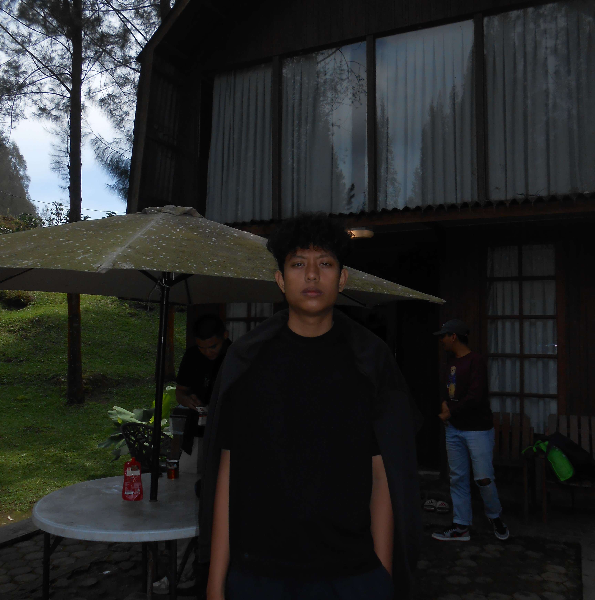
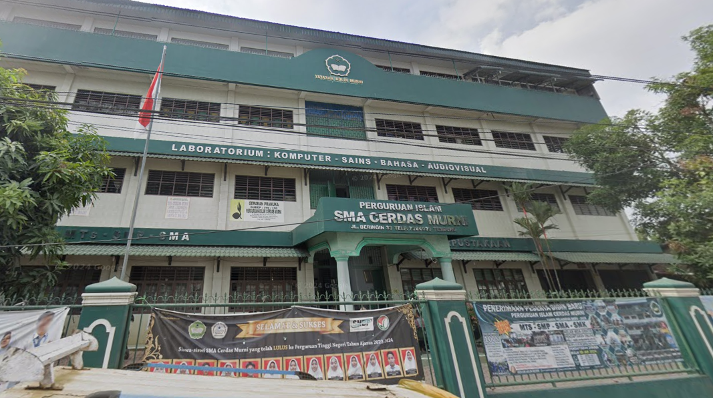
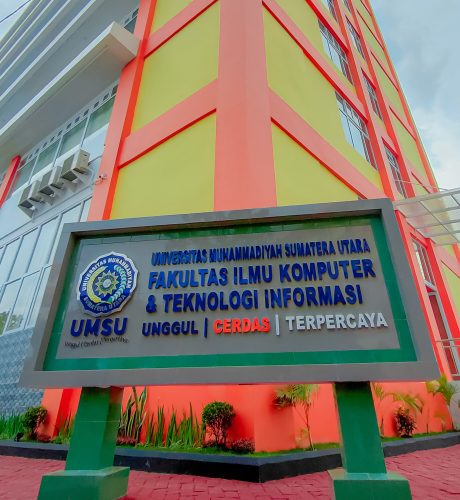
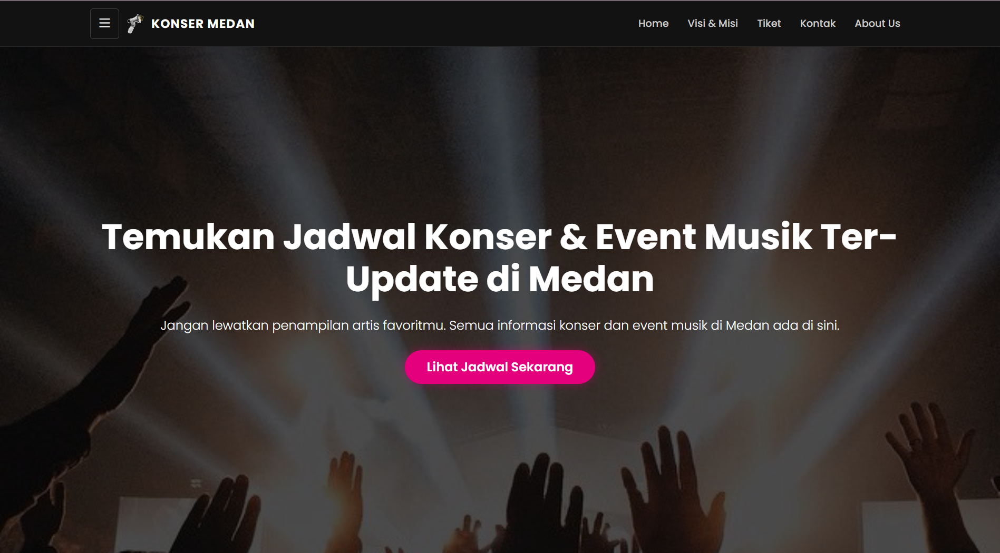
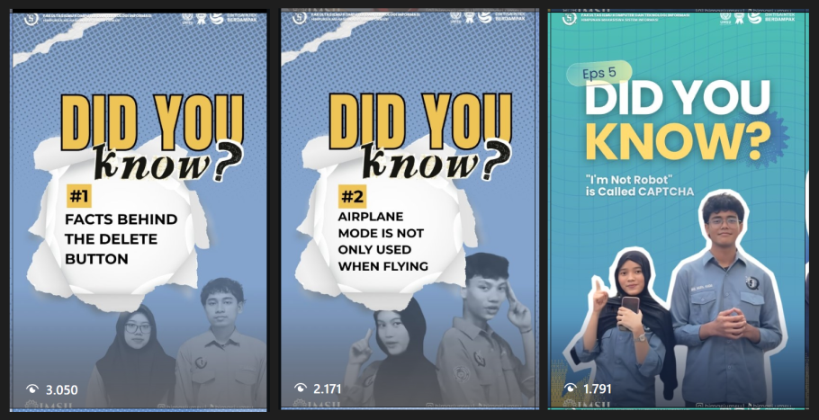

Saya adalah mahasiswa Program Studi Sistem Informasi di Universitas Muhammadiyah Sumatera Utara. Memiliki ketertarikan mendalam pada dunia pemrograman dan pengembangan aplikasi inovatif, baik web maupun mobile. Aktif dalam berbagai proyek perkuliahan dan terus mengasah keterampilan dalam rekayasa perangkat lunak menggunakan konsep pemrograman berorientasi objek.
Email: muasfarhan5@gmail.com
Place: Medan-Sumatera Utara
IPK: 3.72 / 4.00
 Android
Android HTML5
HTML5 CSS3
CSS3 JavaScript
JavaScript Python
Python GitHub
GitHub Figma
Figma
Senior High School Natural Science Program

S1 Sistem Informasi
Membantu pelaksanaan acara dan kegiatan operasional organisasi sekolah.
Menginstalasi dan menjaga kestabilan jaringan internet untuk live streaming pertandingan bulutangkis.
Mengelola media sosial dan memproduksi konten edukatif untuk meningkatkan interaksi digital audiens.
Mendigitalisasi sistem arsip dan persuratan untuk mempercepat pencarian serta efisiensi dokumen.
Mengawasi dan mendampingi peserta guna memastikan kelancaran teknis serta kepatuhan aturan lomba.

Website informasi event musik yang terintegrasi dengan database PHP/MySQL. Di-hosting dan di-deploy melalui InfinityFree untuk akses publik secara langsung.
Visit Project
Seri konten video edukasi teknologi yang dirancang untuk audiens digital. Membahas berbagai fakta menarik seputar ilmu komputer, sejarah teknologi, hingga penjelasan sistem error.
Diterbitkan: Feb 2026
Diterbitkan: Sep 2024 | Kedaluwarsa: Sep 2027
Diterbitkan: Jul 2025
Diterbitkan: Sep 2025
Diterbitkan: Jun 2025